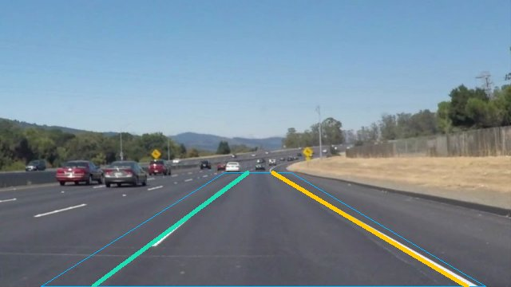
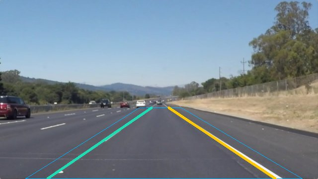
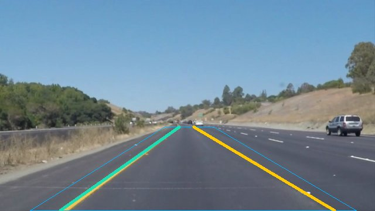
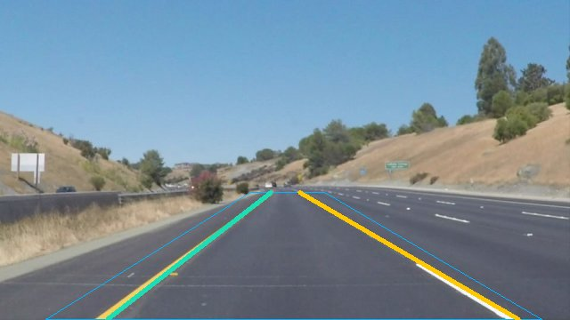
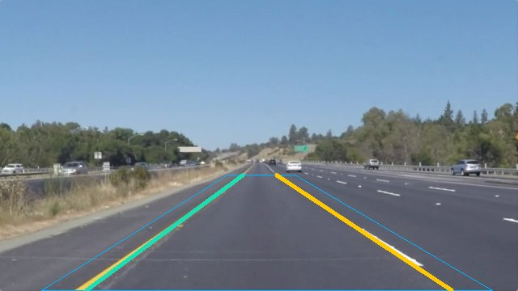
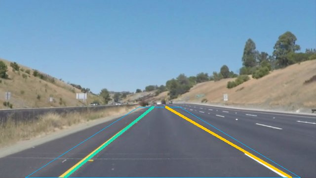

Real photographs, inspectable Python outputs
These overlays were generated by the Python pipeline on six attributed Udacity photographs. A supported pair is an algorithm output, not verified accuracy. The images were used during development and have no official lane labels here.
Originals: 6/6 supported pairs. At 55% brightness: 0/6. With 15 × 15 blur: 5/6. The straight-line approximation is visibly limited on curves.
Launch the connected Python demo in Codespaces · Inspect the full report






Source: Udacity CarND-LaneLines-P1, revision ce5681be7ef8140560c0e464ef2da611e40b4fc9. Original source URLs and checksums in repository data/real/manifest.json. Upstream MIT license. Overlays generated by this independent project.